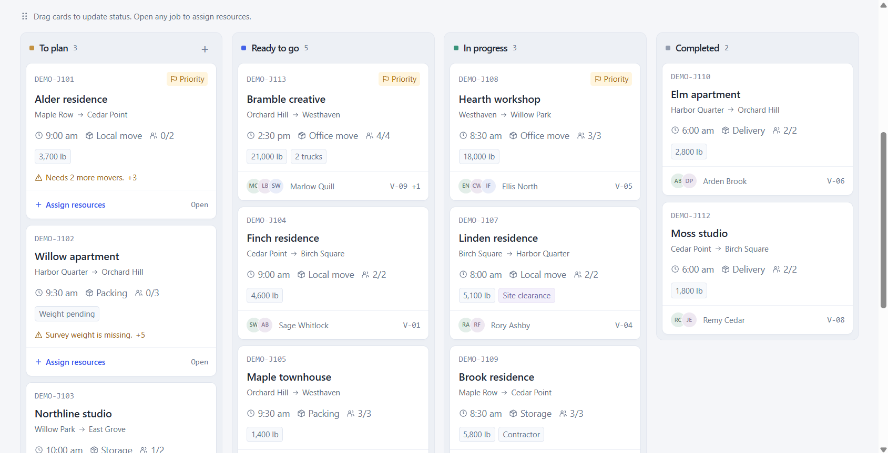
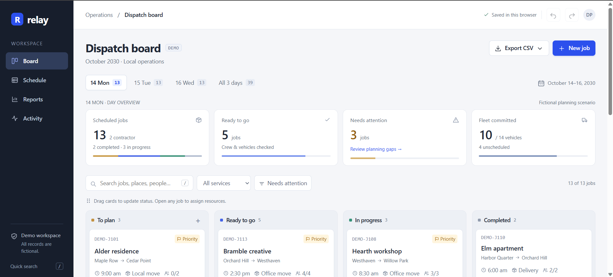

Syed
Rayan Ali.
Business Analytics & Information Systems
Making sense of data. Making things that matter.

Selected projects.
Relay Dispatch Boardsystems and automationA dispatch planning and reporting workspace for moving operations.View live demoTableau Dashboarddata and visualizationFrom rows of data to a clearer picture. An interactive dashboard built in Tableau.Enable JavaScript for the case study Intern Dashboardoperations and trackingA little more structure. A lot more clarity. Internship tracking in one place.Enable JavaScript for the case study

Open a project to explore the details.
About Rayan.
Analytical by nature.
Creative by choice.
I’m an international student from Pakistan studying Management Information Systems at George Mason University and pursuing an accelerated master’s in Business Analytics. I enjoy finding the story in data, building something useful from it, and making the result look as good as it works.
Business analyticsInformation systemsProcess improvement
Away from the screen? Probably watching soccer. I bring the same curiosity to understanding a game as I do to understanding a dataset.
George Mason University
master of science
Business Analytics
Expected December 2028
bachelor of science
Management Information Systems
Expected December 2027
Technical toolkit
Query & analyze
Build & improve
Visualize & explain
Experience.
Oct 2026 – Present
Microsoft AI Ambassador
George Mason University
- Develop, test, and document AI workflows using Microsoft tools, with responsible AI practices and human oversight.
- Work with ITS and campus departments to analyze workflows, assess costs and benefits, and present practical AI solutions.
May 2026 – Aug 2026
Data Science & AI Intern
JK Moving Services
- Built predictive models and Python automation that improved data processing speed by 20–30% and reduced manual logging errors.
- Analyzed 1,000+ monthly shipments with Pandas, NumPy, and Matplotlib, and queried operational datasets of 10,000+ records using SQL.
Sep 2025 – Dec 2025
Business Analyst Intern
Sameday Pack
- Cleaned 500+ product listings and built Tableau dashboards to track product performance and sales trends.
- Automated recurring reports with Excel and Python, reducing manual workload by 30%.
Jan 2026 – Present
Outreach Coordinator
MISOMA
- Coordinated guest speakers, panels, and tech recruitment events with regional IT alumni and corporate representatives.
- Led a student volunteer marketing committee whose outreach increased active meeting attendance by 20%.
Take it with you.
Experience, education & skills / PDF
Let’s connect.
Have a good problem to solve? Let’s talk.